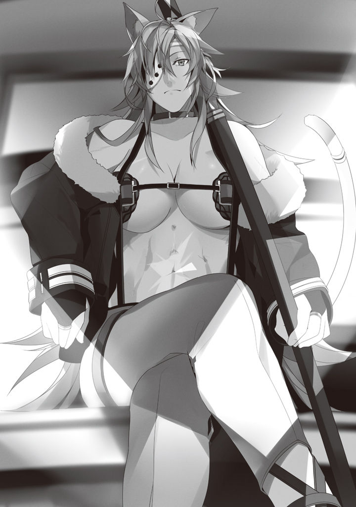

Volume 1 · Unofficial AI-assisted fan translation
Episode 11: Separation
A month had passed since I told Paulo I wanted a part-time job.
Today, a letter arrived for Paulo.
I figured the answer had probably come by now, so I steeled myself and waited.
After sword training, maybe, or at lunch, no, maybe at dinnertime.
With that in mind, I took my sword training diligently, same as always.
It happened in the middle of sword training.
"Say, Rudy."
"Yes, what is it, Father?"
Doing my best to keep a sharp, focused face, I listened to what Paulo had to say.
After all, counting my previous life, this would be my first job ever.
Gonna give it my all.
"You... uh. If somebody told you to split up with Sylphie, how would you feel?"
Paulo asked me something weird.
"Huh? I'd hate it, obviously."
"Yeah, figured."
"What is this about?"
"No, it's nothing. Even if we talked it over, you'd just talk me around anyway."
The instant he said those words.
Paulo changed in an instant.
He laid his killing intent so bare that even an amateur like me could tell.
"Wha!?"
"...!!"
With a wordless pressure, Paulo stepped in.
Death.
That word flashed through my mind.
On reflex, I opened my mana up full blast and met Paulo head-on.
Using wind and fire magic at the same time, I set off a blast between Paulo and me.
I leapt back on my own and, as if shoved by the heat, went a long way backward.
I'd simulated this over and over.
Against Paulo, unless I opened up some distance first, I had no chance of winning.
The blast hurts me too, but if it makes him flinch, I can buy distance.
Paulo, as though there were no blast at all, stayed bent forward and kept charging in.
(Figures, it does nothing!!)
I'd seen it coming, but still, panic hit.
Next evasive move!
Not backward. His step-in is faster.
Thinking that on reflex, I set off a slamming shockwave right beside me.
With an impact like getting slugged, my body went flying sideways.
A spine-chilling whoosh of cut air grazed my ear.
I saw Paulo's sword swing right through the spot where my neck would have been.
All right.
Dodged the first strike. This is big. He's still close, but I managed to get some distance, too.
Victory was in sight.
Right as the guy was about to step in toward me, I caved in the ground under his feet.
Paulo's foot punched through the pitfall.
The instant I thought so, he shifted his weight to his other foot in a flash and stepped in with almost no time lag.
(I gotta stop BOTH his feet!?)
I conjured a mud bog underfoot.
Before I could sink in, I shot a stream of water from my soles and slid backward.
(Crap, too slow...!)
By the time I thought it, it was already too late.
Paulo, at the edge of the bog, took one step, as if stamping the ground hard.
The ground caved under his step-in.
In a single step he was right on top of me.
"Ah, aaaaah!!"
In a panic, I met him with my sword.
No forms, no nothing: a pathetic swing.
Into my hands, swung on brute force alone, came a slick, nasty feeling.
(He parried it with a Water God Style technique...)
That much, I understood.
Parried with a Water God Style technique means a counter is coming.
I knew it, but I couldn't do anything about it.
As if in slow motion, Paulo's sword was drawn into the side of my neck.
(Ah, good thing it's a wooden sword...)
I felt the impact at my neck, and my consciousness dropped away into the dark.
When I woke up, I was inside a small box.
From the big, rattling sway, I sensed I was inside some kind of vehicle.
I tried to sit up, and couldn't move so much as a fingertip. I looked down: I'd been wound round and round with rope.
Rolled up like a mat, as they say.
(What the hell's going on...?)
I turned my head, and there was a chick sitting there.
Chocolate-colored skin, revealing leather clothes, bulging muscles, scars all over.
She wore an eye patch, and had a sharp face that just screamed big-sister boss.
Every inch the fantasy female warrior, this chick.
Also, she had beastlike ears and a tigerish tail, and was a bit on the hairy side.
One of the beast race, maybe?
Maybe she noticed me looking; our eyes met.
"How do you do. My name is Rudeus Greyrat. Pardon my appearance."
I decided to introduce myself first. The basics of conversation: be the one who speaks first.
Take the first move and you hold the initiative.
"You're well-mannered, for Paulo's son."
"I'm Mother's son too, after all."
"I see. Zenith's son, right."
She seemed to know my parents, and I was just a little relieved.
"Ghislaine. Starting tomorrow, I'm counting on you."
Starting tomorrow?
What's she talking about?
"Oh, uh, thank you. I'll be counting on you too."
"Yeah."
For the time being, I burned through the rope with fire magic.
My body ached. From sleeping somewhere weird, maybe.
I stretched, long and hard.
Sweet release.
I'm used to moving nothing but my fingertips in a cramped room, but being tied up in front of a super-sadist-looking lady puts a guy in a funny mood, y'know.
Looking around, my current location was, in fact, a small box.
There were seats at the front and back, and I was sitting across from Ghislaine.

There were windows on the left and right, and I could see outside. Outside was grassland I'd never seen before.
Just as I'd guessed: a vehicle.
The rocking was heavy; ride in this long and I'd probably get motion sick.
A clip-clop sound came from up ahead. Horses, maybe?
In that case, a carriage.
For some reason, I've been loaded into a carriage with a macho chick.
...Gasp!!
C-could it be, I've been kidnapped by this Muscle Women!?
She's gonna make my way-too-adorable self her plaything!?
Stop, I-I'll admit I don't mind muscular women, but I already have a woman I've given my heart to: Sylphie.
So at least... be gentle with me, it's my first time...?
No no no!!
C-c-c-calm down. At a time like this, you calm down.
Count prime numbers to calm down...
Prime numbers are lonely numbers that can only be divided by one and themselves... they give me courage, is what the priest said.
Three, five, um, eleven? Uhh, thirteen? Um, um...
No clue!!
Forget prime numbers, let's just calm down.
Calmly, let's think it through. Why am I in this situation?
Okay, deep breath.
"Hhh... haah..."
Okay.
Let's sort out the situation, as far as I can make it out.
First, Paulo suddenly jumped me, and I got knocked out.
Then, when I woke up, I was tied up and inside a carriage.
Most likely, for some reason, he knocked me out and tossed me into the carriage.
In the carriage sat a Macho Women going on about counting on me starting tomorrow.
Speaking of Paulo, come to think of it, before he jumped me he said something weird.
Something like, split up with Sylphie. Something like, Sylphie's too good for you. Something like, Sylphie's mine.
Th-that lolicon bastard... he's gonna make a move on my Sylphie too!?
Wait, he didn't actually say that last part, did he?
Hmmm?
Thinking about Sylphie, I lost track of what was what.
Damn it, this is Paulo's fault...!
Eh, I can just ask.
"Um."
"Ghislaine is fine."
"Ah, then you can call me Rudy-chan."
"Understood. Rudy-chan."
Seems she's the type who doesn't get jokes.
"Ghislaine-san. Did Father tell you anything?"
"Ghislaine is fine. Drop the -san."
As she said so, Ghislaine pulled a letter from inside her top.
She held it straight out to me. I took it, but nothing was written on the outside of the paper.
"A letter from Paulo. Read it. I can't read, so out loud."
"Yes."
I unfolded the carelessly folded paper and began to read.
'To my beloved son, Rudeus.
If you are reading this letter, I am probably no longer of this world.'
"What did you say!!"
Ghislaine cried out in shock and stood up.
This carriage has a surprisingly high ceiling...
"Please sit down, Ghislaine. There's more."
"Mm, I see."
With that, Ghislaine meekly sat back down.
I read on.
'—is something I always wanted to write, just once. Kidding. You got beaten to a pulp by me, groveled pathetically in the dirt, and on top of that got wound round and round with rope and tossed into a carriage, as pitiful as a captive princess. I figure you've got no idea what's going on, so ask the lump of muscle there about everything... is what I'd like to say, but she's muscle all the way up to her brain, so she probably can't explain anything worth a damn.'
"What did you say!!"
Ghislaine roared in anger and stood up.
"Please sit down, Ghislaine. He praises you in the next sentence."
"Mm, I see."
With that, Ghislaine meekly sat back down.
I read on.
'She's a Sword King.
If you're going to learn the sword, you won't find anybody better suited than her unless you go to, say, the swordsmen's holy land. Dad vouches for her skill. Dad has never beaten her once... except in bed.'
Quit writing unnecessary crap every single time, you idiot dad.
But Ghislaine had a look on her face like she didn't entirely mind.
He really is a hit with women, that guy.
And she's strong, huh, Ghislaine-san.
'Now then, about your job: you'll be home tutor to a young lady who lives in the city called Roa, the biggest in the Fittoa Region. I want you to teach her arithmetic, reading and writing, and some simple magic. She's a super-willful young lady, so violent that the school begged her not to come anymore. She's sent tutor after tutor packing... but I believe you can manage somehow.'
Manage somehow, he says. So you're just dumping the whole thing on me...
"G-Ghislaine, are you willful?"
"I'm not the young lady."
"Yeah, I figured."
I read on.
'The lump of muscle there is the bouncer and sword instructor hired by the young lady's house. Apparently, in exchange for teaching you the sword, she came out saying she wants to learn arithmetic and reading and writing herself. Don't laugh at her, like, what's she even saying, when her brain's muscle too. I'm sure she means it too (lol)'
"What did you say..."
A vein bulged on Ghislaine's forehead.
This letter, it seemed, was meant both to explain the situation to me and to needle Ghislaine.
What is it with these two, anyway?
'She'll be a slow learner, no question, but if you figure it saves you the lesson fees, it's not a bad deal.'
Lesson fees.
I see, so I'm going to learn the sword from this person. Paulo's a go-by-feel type, after all. So he lined up a better instructor.
Or maybe he was disappointed by how little I was improving.
You could've looked after me till the end, y'know...
"If someone learns swordsmanship from you, Ghislaine, how much do they usually get charged?"
"Two Asuran gold coins a month."
Two gold coins!!
For taking me on as a home tutor, Roxy was getting five Asuran silver coins a month, if I remember right.
So roughly four times that. I see, maybe it really isn't a bad deal.
Incidentally, living expenses for one person are supposedly about two Asuran silver coins a month.
'For the next five years, you'll be boarding at the young lady's house and teaching her.
Five years. During that time, I forbid you to come home. I also forbid exchanging letters or anything else. Because with you around, Sylphie can't learn to stand on her own. Also, I've felt that not just Sylphie, but you too, have started depending on her, so I've taken the liberty of pulling you two apart by force.'
"What... did you say...?"
Huh, what?
W-wait, hang on a sec.
...Huh?
What even is that. Meaning I can't see Sylphie for five years?
No letters, even?
"What, Rudy-chan, did you just split up with your sweetheart?"
While I sat there with a look of despair, Ghislaine asked, amused.
"No, I just got thrashed by a father who doesn't know how to act his age."
I didn't even get a chance to say goodbye.
You really did it this time, Paulooo...
"Don't be so down, Rudy-chan."
"Um."
"What?"
"On second thought, please call me Rudeus."
"Yeah, understood."
But, if I think it over calmly, what Paulo says makes sense, too.
True, if Sylphie had grown up the way she is now, she might've turned into one of those childhood-friend characters from some crappy eroge. Forever glued to the protagonist, like a satellite circling the protagonist as the center of her world: a character with no self.
In the real world, the dependence would probably fade away while she hung out with friends at school or took lessons or whatever, but Sylphie can't make friends because of her hair.
Five years on, there was every chance she'd still be glued to me.
Personally, I'd be fine with that, but the adults around us apparently didn't think so.
Figures. Good call.
'About your pay: you'll be paid two Asuran silver coins every month. It's less than the going rate for a home tutor, but a lot for a kid's allowance. Find some free time and learn how to use money in town. Money, see, if you don't use it regularly, you won't know how to use it well when it counts. Then again, my brilliant son will probably use it well without learning... oh, and whatever you do, don't go buying women, got it?'
Like I said, quit tacking on that one extra line.
Or is this one of those? One of those Da○ho Club things?
The bit that goes, don't you dare do it?
'And, if you stick it out for five years without quitting and successfully finish teaching the young lady reading and writing, arithmetic, and magic, the contract says you'll be paid, as a special bonus, a sum equal to two people's tuition at the University of Magic.'
I see.
Do the home tutor job properly for five years, and as promised, I can do what I want.
'Well, there's no guarantee Sylphie will go along with you five years from now, and your own fever might have cooled and your heart changed by then. I'll smooth things over with Sylphie on this end.'
Smooth things over, he says... I've got nothing but a bad feeling about that, Papa.
'I pray that over these five years, in a completely new place, you'll learn all sorts of things and take an even greater leap forward. From your brimming-with-intellect, way-too-great father, Paulo'
Intellect? What intellect...!!
That was pure brute force, wasn't it!!
Still, this time, I have no choice but to take my hat off to his judgment.
For my sake, and for Sylphie's.
Sylphie might end up all alone, but if you don't solve your own problems with your own strength, you'll never grow, no matter how much time goes by.
She can't go on leaning on me.
"Paulo loves you."
At Ghislaine's words, I smiled wryly.
"He used to be more standoffish, though. Once he figured out there were parts of me that are like him, he started coming on strong. But, you too, Ghislaine..."
"Hm? What about me?"
I read the last line.
'P.S. You can lay a hand on the young lady if it's consensual, but the lump of muscle is my woman, so hands off.'
"So he says."
"Hmm. Send that letter to Zenith."
"Roger."
And so, I ended up bound for the biggest city in the Fittoa Region, the fortress city of Roa.
I had a lot of feelings about it, but for now, this is fine. It woke me up a little. Yeah. This was for the best. I shouldn't stay with Sylphie. I am absolutely not hung up on her. Yeah.
Telling myself that.
(But I'd still like to see her, like, once a year...)
My heart wavering, just a little.
★ Paulo's point of view ★
"Th-that was way too close..."
I looked down at my passed-out kid and my mud-caked shoes.
Today was the last day I'd be teaching him the sword, so I figured I'd get a little serious, scare him, show him what they call fatherly dignity, and then knock him out, and the little punk fired off magic with crazy-fast reactions.
And not as attacks, either: mostly magic to stop my feet.
On top of that, every one was a different spell.
"That's my son for you. He's got a feel for fighting."
In terms of time it was over in an instant, but even with a complete surprise attack, it took me three whole steps.
The last step especially: if I'd hesitated even a little, my feet would've been caught, and I'd have been finished in one go.
Three steps, against a mage. If he'd had other companions, backup would've come in around the second step. Or if there'd been a bit more distance, it would've taken a fourth.
On points, it was a total loss.
Throw him into some party as he is right now and send him exploring labyrinths, and this kid would be about as useful as a mage can get.
"So this is the genius who made a Water Saint-rank mage lose her confidence, huh..."
My own kid, and it scares me to think what he'll grow into.
But, I'm happy.
Up to now, all I ever felt toward anybody with more talent than me was jealousy, but strangely, when it's my own son, nothing but happiness wells up.
"Oops, this is no time to be saying stuff like that. If I don't hurry, Rawls and the others will get here."
I quickly tied up my passed-out son with rope and tossed him into the carriage that had pulled up right about when I finished.
Right on cue, Rawls had come too.
With Sylphie along.
"Rudy!?"
Sylphie saw Rudeus tied up and, maybe meaning to rescue him, out of nowhere let fly at me with Intermediate attack magic, chantless. I parried it with no trouble, but on top of being chantless, the spell had power and speed to spare.
Anyone but me would've been dead.
Damn that Rudeus, what the hell's he been teaching her.
I handed the letter to Ghislaine, tossed Rudeus into the carriage, and told the driver to head out.
I glanced over, and Rawls was crouched down, teaching Sylphie something. That's it, that's it. Education is a parent's job. The part you left to Rudeus, you've gotta make up for yourself. Right, Rawls?
I let out a breath and watched over them warmly, and after a while, Sylphie's voice reached me on the wind.
"Okay. I'll get strong enough to save Rudy...!!"
Mm, he sure is loved. My son.
While I was watching that, my two wives came out of the house.
I'd told them that if they were going to watch, they should do it from inside because it was dangerous, but they must have come out to see him off.
"Ahh, my darling Rudy is leaving."
"Madam. This, too, is a trial!!"
"I know, Lilya. Ah, aaah, Rudeus!! My son, setting out on a journey!! And poor me, robbed of my only child!!"
"Madam. He is no longer an only child."
"That's right. He has two little sisters now."
"Two...!! M-Madam!!"
"It's all right, Lilya. I will love your child too, you'll see!! Because, I, love, you!!"
"Ah!! Madam, as do I!!"
In absurdly theatrical tones, they saw the carriage off.
Maybe because Rudeus is so capable, even these two aren't all that worried.
Still, man, these two get along great. Sure would be nice if they got along with me, too.
Actually, sure would be nice if they'd quit teaming up so nicely to pick on me.
"Still, by the time the little ones are old enough to remember things, Rudeus won't be here, huh..."
Rudeus seemed to have been scheming some Cool Big Brother Plan or whatever, but too bad for him.
The love of my cute daughters is going to be their father's monopoly.
Guhehe.
Hang on, wait a minute, though. From now on, Rudeus gets an elite education from the Sword King Ghislaine.
Five years from now, that makes him twelve. His body will be solidly built by then.
When he comes back, if we have a practice match with magic allowed, am I even going to be able to beat Rudeus?
This is bad. Five years from now, my dignity as a father is looking real bad.
"Mom, Lilya. Now that Rudy's gone, I think I'll get in a little training myself."
Zenith's flat, unimpressed face. Lilya whispered something into Zenith's ear.
"He's about to lose to Master Rudeus, so only now is he feeling the danger."
"He's always been like that. He won't put in any effort until he's about to lose."
Already, my dignity as a father was looking real bad.
(Eh, not like I need dignity anyway.)
Having known a father who had nothing but pointless dignity, I mean that from the bottom of my heart. I'm going to act like a no-good dad who's a little loose with women. I'm going to aim to be a father with no dignity, one his kids can feel close to. At least until my three kids are grown...
I stole a glance at Zenith.
You'd never guess she'd had two whole kids: what a body...
(Though if a fourth and a fifth come along, I'll extend it. Heh-heh-heh.)
Eh, putting the fourth kid aside.
(Rudeus...)
I don't like doing it this way either.
But you wouldn't listen if I told you, and I'm not confident I could talk you into listening, either.
Still, just watching and doing nothing would make me a failure as a parent. I'm not up to it, and I'm leaning on other people, but I took the liberty of doing this. It might have been heavy-handed, but a smart kid like you will understand...
No, you don't have to understand.
The things that happen where you're headed are surely things you could never taste in this village. Even if you don't understand, if you just keep dealing with what's in front of you, it'll surely become your strength.
So resent me.
Resent me, and curse your own powerlessness for not being able to defy me.
I grew up held down by my father, too.
I couldn't throw that off, so I bolted.
I have regrets about that, and I've done some soul-searching. I don't want you to go through the same thing.
But I'll tell you this: bolting is how I got my strength.
Whether it's strength enough to beat my father, I don't know, but strength enough to get the woman I want, protect what I want to protect, and hold down my young son: that much, I've got.
If you want to rebel, go right ahead.
And then get strong and come back.
At least strong enough not to lose to your father's tyranny.
As he watched the carriage carrying Rudeus, those were the things on Paulo's mind.
(To be continued in the next volume)